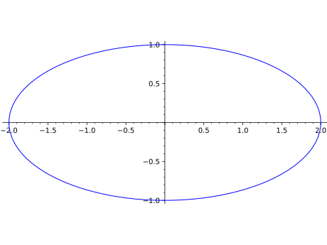
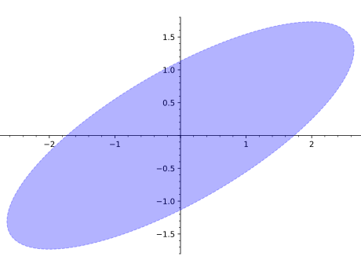
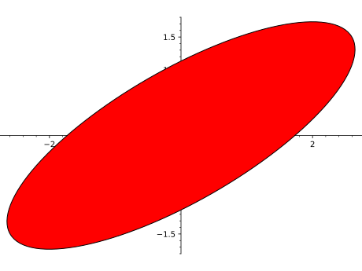
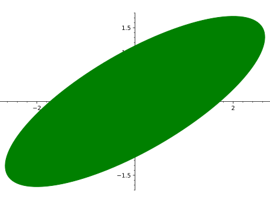
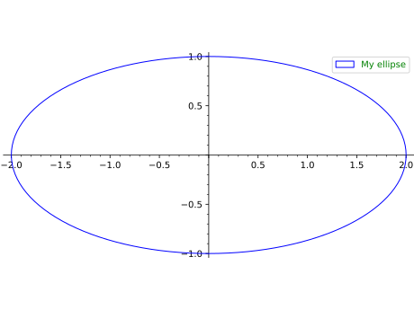

Ellipses¶
- class sage.plot.ellipse.Ellipse(x, y, r1, r2, angle, options)¶
Bases:
sage.plot.primitive.GraphicPrimitivePrimitive class for the
Ellipsegraphics type. Seeellipse?for information about actually plotting ellipses.INPUT:
x,y- coordinates of the center of the ellipser1, r2- radii of the ellipseangle- angleoptions- dictionary of options
EXAMPLES:
Note that this construction should be done using
ellipse:sage: from sage.plot.ellipse import Ellipse sage: Ellipse(0, 0, 2, 1, pi/4, {}) Ellipse centered at (0.0, 0.0) with radii (2.0, 1.0) and angle 0.78539816339...
- get_minmax_data()¶
Return a dictionary with the bounding box data.
The bounding box is computed to be as minimal as possible.
EXAMPLES:
An example without an angle:
sage: p = ellipse((-2, 3), 1, 2) sage: d = p.get_minmax_data() sage: d['xmin'] -3.0 sage: d['xmax'] -1.0 sage: d['ymin'] 1.0 sage: d['ymax'] 5.0
The same example with a rotation of angle \(\pi/2\):
sage: p = ellipse((-2, 3), 1, 2, pi/2) sage: d = p.get_minmax_data() sage: d['xmin'] -4.0 sage: d['xmax'] 0.0 sage: d['ymin'] 2.0 sage: d['ymax'] 4.0
- plot3d()¶
Plotting in 3D is not implemented.
- sage.plot.ellipse.ellipse(center, r1, r2, angle=0, alpha=1, fill=False, thickness=1, edgecolor='blue', facecolor='blue', linestyle='solid', zorder=5, aspect_ratio=1.0, legend_label=None, legend_color=None, **options)¶
Return an ellipse centered at a point center =
(x,y)with radii =r1,r2and angleangle. Typeellipse.optionsto see all options.INPUT:
center- 2-tuple of real numbers - coordinates of the centerr1,r2- positive real numbers - the radii of the ellipseangle- real number (default: 0) - the angle between the first axis and the horizontal
OPTIONS:
alpha- default: 1 - transparencyfill- default: False - whether to fill the ellipse or notthickness- default: 1 - thickness of the linelinestyle- default:'solid'- The style of the line, which is one of'dashed','dotted','solid','dashdot', or'--',':','-','-.', respectively.edgecolor- default: ‘black’ - color of the contourfacecolor- default: ‘red’ - color of the fillingrgbcolor- 2D or 3D plotting. This option overridesedgecolorandfacecolorfor 2D plotting.legend_label- the label for this item in the legendlegend_color- the color for the legend label
EXAMPLES:
An ellipse centered at (0,0) with major and minor axes of lengths 2 and 1. Note that the default color is blue:
sage: ellipse((0,0),2,1) Graphics object consisting of 1 graphics primitive
 More complicated examples with tilted axes and drawing options:
sage: ellipse((0,0),3,1,pi/6,fill=True,alpha=0.3,linestyle="dashed") Graphics object consisting of 1 graphics primitive
 other way to indicate dashed linestyle:
sage: ellipse((0,0),3,1,pi/6,fill=True,alpha=0.3,linestyle="--") Graphics object consisting of 1 graphics primitive
with colors
sage: ellipse((0,0),3,1,pi/6,fill=True,edgecolor='black',facecolor='red') Graphics object consisting of 1 graphics primitive
 We see that
rgbcoloroverrides these other options, as this plot is green:sage: ellipse((0,0),3,1,pi/6,fill=True,edgecolor='black',facecolor='red',rgbcolor='green') Graphics object consisting of 1 graphics primitive
 The default aspect ratio for ellipses is 1.0:
sage: ellipse((0,0),2,1).aspect_ratio() 1.0
One cannot yet plot ellipses in 3D:
sage: ellipse((0,0,0),2,1) Traceback (most recent call last): ... NotImplementedError: plotting ellipse in 3D is not implemented
We can also give ellipses a legend:
sage: ellipse((0,0),2,1,legend_label="My ellipse", legend_color='green') Graphics object consisting of 1 graphics primitive
